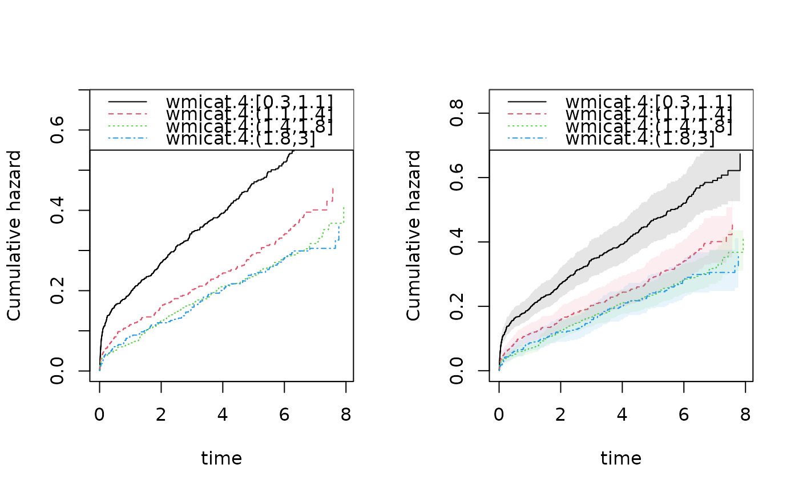

Fast Cox PH regression Robust variance is default variance with the summary.
phreg(formula, data, offset = NULL, weights = NULL, ...)
| formula | formula with 'Surv' outcome (see |
|---|---|
| data | data frame |
| offset | offsets for cox model |
| weights | weights for Cox score equations |
| ... | Additional arguments to lower level funtions |
influence functions (iid) will follow numerical order of given cluster variable so ordering after $id will give iid in order of data-set.
Klaus K. Holst, Thomas Scheike
data(TRACE) dcut(TRACE) <- ~. out1 <- phreg(Surv(time,status==9)~vf+chf+strata(wmicat.4),data=TRACE) ## tracesim <- timereg::sim.cox(out1,1000) ## sout1 <- phreg(Surv(time,status==1)~vf+chf+strata(wmicat.4),data=tracesim) ## robust standard errors default summary(out1)#> #> n events #> 1878 958 #> #> 1878 clusters #> log-coeffients: #> Estimate S.E. dU^-1/2 P-value #> vf 0.452306 0.136473 0.111038 9e-04 #> chf 0.931822 0.074226 0.074650 0e+00 #> #> exp(coeffients): #> Estimate Std.Err 2.5% 97.5% P-value #> [vf] 1.57193 0.21453 1.15147 1.99240 0.0077 #> [chf] 2.53913 0.18847 2.16974 2.90852 0.0000 #>par(mfrow=c(1,2)) bplot(out1) ## bplot(sout1,se=TRUE) ## computing robust variance for baseline rob1 <- robust.phreg(out1) bplot(rob1,se=TRUE,robust=TRUE)## making iid decomposition of regression parameters betaiiid <- iid(out1) ## making iid decomposition of baseline at a specific time-point Aiiid <- mets:::iid.baseline.phreg(out1,time=30)